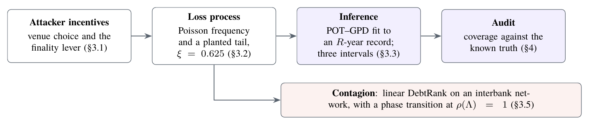
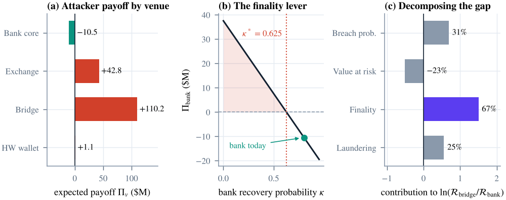
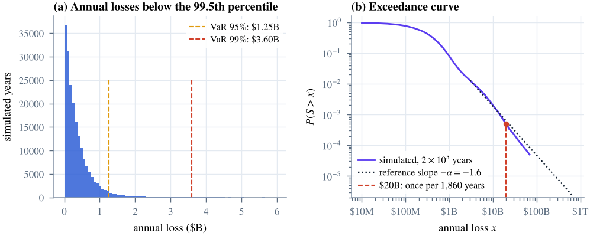
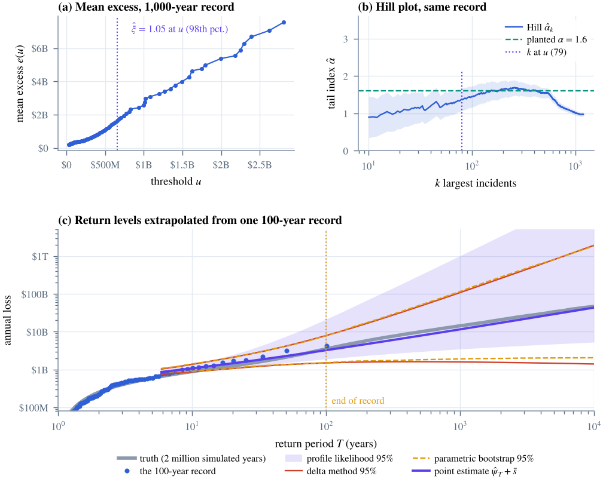
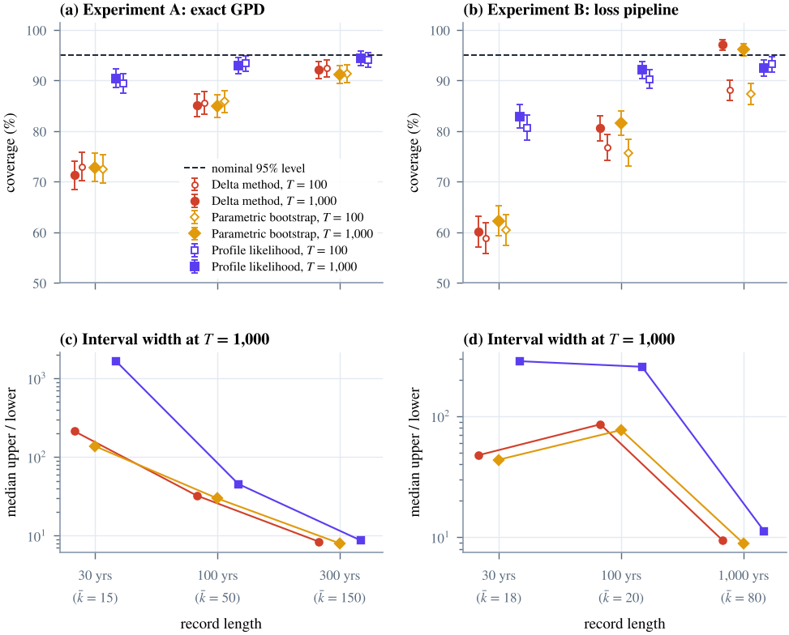
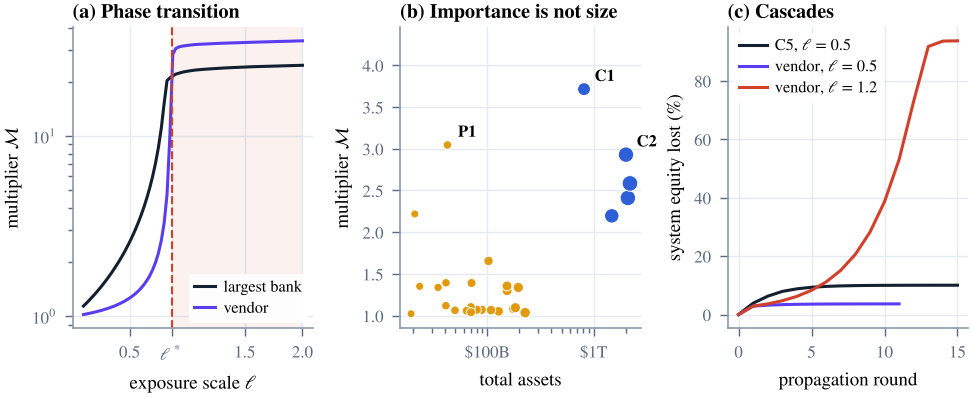

1 Introduction
Cyber risk has moved from the information-technology department to the agenda of financial-stability authorities. The International Monetary Fund devotes a chapter of its Global Financial Stability Report to the macrofinancial consequences of cyber incidents (International Monetary Fund 2024); the European Union’s Digital Operational Resilience Act brings critical information and communication technology providers under supervisory oversight (European Union 2022); and a growing academic literature asks whether a cyber attack on a large bank could propagate like a run or a payment-system failure (Duffie and Younger 2019; Kashyap and Wetherilt 2019; Eisenbach et al. 2022). Behind these developments lies a deceptively simple question that supervisors, insurers and boards keep asking: when will a catastrophic cyber event hit the banking system, and how large will it be?
Two empirical regularities frame any answer. The first concerns where attackers strike. The largest thefts of the past decade have occurred in crypto-asset venues rather than in the core of the banking system. Cross-chain bridges and custodial exchanges have lost hundreds of millions to more than a billion dollars in single incidents, including the theft of roughly $1.5 billion from a major exchange in February 2025 (Federal Bureau of Investigation 2025; Chainalysis 2025). The best-known attack on the banking core, the 2016 compromise of a central bank’s payment-messaging environment, issued fraudulent instructions worth close to $1 billion, yet most were blocked and the amount ultimately lost was an order of magnitude smaller. Banks hold vastly larger balances than any crypto venue, so this pattern calls for an explanation. The second regularity concerns how large losses can be. Cyber losses are heavy-tailed (Maillart and Sornette 2010; Edwards et al. 2016; Eling and Wirfs 2019), so the quantities of policy interest, such as the 1-in-100-year or 1-in-1,000-year loss, lie far beyond the range of any observed record. They can only be reached by extrapolation, and extrapolation from a few decades of data is precisely where statistical confidence is most likely to be misplaced.
This paper studies both regularities, and the channel that links them to systemic risk, within one reproducible framework. We ask three questions. Why do rational attackers prefer venues that hold less money? How confidently can one state the return period of a catastrophic banking-sector loss from realistic data? And how does a large cyber loss at one institution propagate through interbank exposures? Figure 1 summarizes the design: an attacker model determines which venues are attractive; a loss process with a known, planted tail generates incident and annual losses; an inference layer estimates extreme return levels from short records with three interval methods; an audit layer measures how often those intervals contain the truth; and a contagion layer propagates large losses through an interbank network.

Our central finding is that standard practice is overconfident in a specific and dangerous way. In a controlled Monte Carlo experiment in which the truth is known, nominal 95% intervals for the 1-in-1,000-year loss built with the delta method or the parametric bootstrap contain the truth only 60.2% and 62.3% of the time when estimated from 30-year records generated by a realistic loss process. The failures are entirely one-sided: 39.8% of delta intervals lie wholly below the true loss and none lie above it. The reason is that the point estimate itself is severely biased downward in short records: the median estimate is only 0.33 times the true 1-in-1,000-year loss, because a short record rarely contains the rare events that reveal how heavy the tail is. Intervals that are symmetric on the log scale around such an estimate cannot reach the truth. Profile-likelihood intervals, which are free to be strongly right-skewed, raise coverage to 82.9% in the same setting and to between 92.9% and 94.4% once the record contains 50 or more exceedances. They also roughly halve the proper interval score of Gneiting and Raftery (2007), so their additional width is not mere caution but better calibrated uncertainty. The price is width, exactly where data are thin: with 15 exceedances the median upper limit of a profile interval is 1,654 times its lower limit. Such a ratio is not a defect of the method; it is an honest statement of how little a few decades of data can say about a millennial loss.
The paper makes five contributions. First, we formalize attacker venue selection as a rational-choice problem in the tradition of Becker (1968) and show that, because retained value is a product of four factors, the log payoff gap between two venues decomposes exactly into factor contributions. With illustrative parameters, finality explains 67% of the gap between a bank core and a cross-chain bridge, and a bank’s recovery capability is the single most effective deterrent. Second, we build a loss-distribution model whose tail index is known by construction, which turns extreme-value inference into an auditable experiment, and we derive a second-order compound-sum correction, , that converts incident-level return levels into the annual-aggregate levels that matter for solvency. Third, we run a coverage study with 1,000 independent records in each of twelve design cells and compare delta-method, parametric-bootstrap and profile-likelihood intervals using Wilson confidence bands, paired McNemar tests and proper interval scores. Fourth, we show that what profile likelihood cannot repair is threshold bias: with long records, a threshold placed near a structural kink in the severity distribution inflates the fitted shape and turns the remaining errors into overestimates. Fifth, we model interbank contagion with linear DebtRank (Bardoscia et al. 2015), verify its closed form numerically, and show a phase transition at a critical exposure of 0.868 times equity, beyond which a cyber hit on a shared technology vendor destroys 93.7% of system equity. Systemic importance in our network tracks interconnection rather than size: a periphery bank with $42B of assets outranks core banks 35 to 52 times larger.
All parameters are illustrative, chosen to be plausible rather than estimated. The contribution is therefore methodological: the behaviour of interval estimators, the size of the compound-sum correction and the existence of the phase transition depend on the tail index, the number of exceedances and the network spectrum, not on the dollar values. The conclusions transfer to any heavy-tailed loss process with a comparable shape and comparable data scarcity; the dollar figures do not. We return to calibration in Section 7.
The rest of the paper is organized as follows. Section 2 reviews related work. Section 3 presents the attacker model, the loss process, the inference methods and the contagion model. Section 4 describes the experimental design. Section 5 reports results, Section 6 discusses implications for supervision and market design, Section 7 states limitations, and Section 8 concludes. The appendix contains derivations, the full coverage table and implementation details.
2 Related literature
2.0.0.1 Economics of cybercrime.
The view that information-security outcomes are shaped by incentives rather than by technology alone goes back to Anderson (2001) and Anderson and Moore (2006); Moore et al. (2009) survey the economics of online crime, emphasizing the specialization of criminal supply chains and the role of cash-out frictions. Our attacker model is a direct application of the rational-choice approach to crime of Becker (1968): the attacker weighs the expected gain against the probability and severity of punishment. Our addition is to separate the expected gain into a breach component and a retention component, and to show that the retention component, governed by the irreversibility of settlement and by laundering frictions, dominates the comparison between traditional and crypto-asset venues. Aldasoro et al. (2022) and Jamilov et al. (2021) document cross-sectional drivers and the economic anatomy of cyber risk with incident and textual data; our model is complementary in providing a structural account of venue choice.
2.0.0.2 Cyber loss distributions and operational risk.
A consistent empirical finding is that cyber losses are heavy-tailed. Maillart and Sornette (2010) report power-law tails for personal-data breaches, Edwards et al. (2016) examine breach sizes and frequencies and caution against reading trends into heavy-tailed data, and Eling and Wirfs (2019) and Biener et al. (2015) fit extreme-value models to operational-loss databases and find that cyber events are distinctive mainly in their tails. Cyber risk in banks has historically been modelled within operational risk, where the loss distribution approach, which combines a frequency and a severity distribution into an aggregate loss, was standard under the advanced measurement approaches (Frachot et al. 2001; Moscadelli 2004; Chavez-Demoulin et al. 2006), before being replaced by a standardized approach in the final Basel III framework (Basel Committee on Banking Supervision 2017). Moscadelli (2004) and Chavez-Demoulin et al. (2006) already noted that tail estimates from operational-loss data are fragile. We quantify that fragility for interval estimation specifically and show that it is one-sided.
2.0.0.3 Extreme-value inference.
The peaks-over-threshold method rests on the Pickands–Balkema–de Haan theorem (Balkema and Haan 1974; Pickands 1975): for a wide class of distributions, exceedances of a high threshold are approximately generalized Pareto. Maximum-likelihood estimation and its asymptotics are due to Smith (1987) and Davison and Smith (1990); Hosking and Wallis (1987) propose probability-weighted moments and Zhang and Stephens (2009) an efficient Bayesian-flavoured alternative; Grimshaw (1993) reduces the likelihood to a one-dimensional profile, which we use. The Hill estimator (Hill 1975) provides a non-parametric diagnostic of the tail index. Textbook treatments (Embrechts et al. 1997; Coles 2001; McNeil et al. 2015) note that likelihood-ratio intervals for return levels are usually preferable to Wald intervals because the profile likelihood is strongly asymmetric. To our knowledge, the magnitude and the one-sidedness of the coverage failure at record lengths typical of cyber data, and the comparison with the parametric bootstrap (Davison and Hinkley 1997) under a proper scoring rule (Gneiting and Raftery 2007), have not been documented for cyber or operational losses. We also contribute a simple second-order correction for compound sums, building on the single-big-jump structure of subexponential sums (Embrechts et al. 1997), and we use Breiman’s lemma (Breiman 1965) to establish the tail index of our loss process.
2.0.0.4 Financial networks and systemic cyber risk.
The clearing model of Eisenberg and Noe (2001) and its successors characterize how defaults propagate through obligations; Acemoglu et al. (2015) show that the same network can be robust to small shocks and fragile to large ones, and Glasserman and Young (2015, 2016) bound the amplification that balance-sheet contagion can generate. DebtRank (Battiston et al. 2012) and its linear variant (Bardoscia et al. 2015) propagate distress before default by marking down claims in proportion to the debtor’s equity loss; Bardoscia et al. (2017) show that such systems become unstable when the spectral radius of the exposure matrix exceeds one. For cyber risk specifically, Eisenbach et al. (2022) estimate how an attack that impairs a large bank’s payment capacity would spill over to other banks through the wholesale payment network, Duffie and Younger (2019) analyse the liquidity runs a cyber event could trigger, Kashyap and Wetherilt (2019) propose principles for regulating cyber risk, and Crosignani et al. (2023) show that attacks propagate through supply chains. Our network analysis contributes a shared-vendor scenario, the third-party concentration channel targeted by recent regulation (European Union 2022), and a demonstration that interconnection, not size, drives systemic importance in a core–periphery system.
3 Framework
3.1 Attacker venue selection
A financially motivated attacker chooses among venues , such as a bank’s payment core, a custodial crypto-asset exchange, a cross-chain bridge, or the self-custody wallets of retail holders. Following Becker (1968), the attacker compares expected gains with expected punishment, but we separate the gain into the probability of a successful compromise and the share of stolen value the attacker retains. The expected payoff from venue is (1) where is the probability that a serious attempt succeeds, the value reachable in one breach, the probability that stolen funds are frozen, recalled or clawed back, the share of value lost to laundering and cash-out, the probability that the attacker is identified and punished, the monetary equivalent of the sanction and the cost of mounting the attack. We call the finality of the venue: it is the probability that a theft, once executed, cannot be reversed. Settlement in the banking core is designed to be revocable in practice through payment recalls, correspondent freezes and anti-money-laundering controls, whereas a confirmed transfer on a public blockchain is final unless a custodian or token issuer intervenes. The attacker targets and attacks only if .
Proposition 1 (Exact decomposition of the retained-value gap). For any two venues with , (2) and the finality share is invariant to the order in which factors are considered.
Proof. is a product of four positive factors, so its logarithm is the sum of their logarithms. Each depends only on its own factor, so the attribution does not depend on an ordering, unlike sequential counterfactual decompositions of non-multiplicative objects. ◻
Corollary 1 (Break-even finality). if and only if . Raising recovery capability above removes the venue from the attacker’s choice set, whatever its balance sheet.
The decomposition explains differences in retained value; differences in also reflect punishment and cost, which are small relative to in our calibration. Table 1 lists the illustrative parameters. They encode three stylized facts: the bank core holds the most value but offers high recovery and costly cash-out; custodial exchanges and bridges offer lower recovery and cheaper laundering; and retail wallet campaigns have low success rates but almost no recovery.
Table 1. Venue parameters and attacker payoffs (illustrative)
| Venue | |||||||||
| ($M) | ($M) | ($M) | ($M) | ($M) | |||||
| Bank core (SWIFT-connected) | 0.15 | 1,000 | 0.80 | 0.60 | 0.35 | 50 | 5.0 | 12.0 | 10.5 |
| Custodial crypto exchange | 0.20 | 500 | 0.25 | 0.35 | 0.20 | 20 | 2.0 | 48.8 | 42.8 |
| DeFi cross-chain bridge | 0.30 | 600 | 0.10 | 0.30 | 0.15 | 15 | 1.0 | 113.4 | 110.2 |
| Hardware-wallet phishing | 0.05 | 50 | 0.02 | 0.25 | 0.10 | 5 | 0.2 | 1.8 | 1.1 |
Notes: breach probability; value at risk; recovery probability (one minus finality); laundering haircut; probability of attribution and punishment; sanction; attack cost; retained value; expected payoff, Equation (1). Values are chosen to be plausible, not estimated; calibration sources are discussed in Section 7.
3.2 The loss process
Losses that reach the banking core follow a loss-distribution model. In year the number of loss-causing incidents is . An incident is a tail event with probability , in which case its pre-cascade loss is Pareto, for ; otherwise it is log-normal, with . A large incident can cascade: if the pre-cascade loss exceeds a trigger , then with probability it is multiplied by , where is exponential with mean . The incident loss and the annual loss are (3) Table 2 reports the parameters: four loss-causing incidents per year, a log-normal body with a median of $30 million, a 5% tail share with Pareto index , and cascades that triple the expected loss of 30% of incidents above $1 billion. The cascade multiplier is a reduced-form stand-in for the network amplification analysed in Section 3.5.
Table 2. Loss-process parameters (illustrative)
| Symbol | Meaning | Value |
|---|---|---|
| loss-causing incidents per year | 4 | |
| median and log-scale dispersion of the log-normal body | $30M, 1.4 | |
| share of incidents drawn from the Pareto tail | 0.05 | |
| Pareto scale and tail index | $200M, 1.6 | |
| cascade trigger | $1,000M | |
| cascade probability above and mean multiplier | 0.30, 3 | |
| planted shape parameter of incident and annual losses | 0.625 |
Lemma 1 (Planted tail index). Under Equation (3) with , as with , and . Both incident and annual losses therefore lie in the Fréchet domain of attraction with shape .
Proof sketch. The log-normal component has . On the tail branch, a pre-cascade loss below can exceed a large only if , an event of exponentially small probability. Above , is independent of with , so Breiman’s lemma (Breiman 1965) gives ; mixing the cascade and no-cascade branches yields the constant . A regularly varying distribution is subexponential, and for a compound Poisson sum of subexponential variables (Embrechts et al. 1997, sec. 1.3). ◻
Remark 1 (Pre-asymptotic distortions). Lemma 1 is asymptotic, and two features of the loss process distort the local shape at the thresholds an analyst can afford. The log-normal body decays faster than any power law, so where it still supplies a large share of exceedances the tail looks lighter than . The cascade, by contrast, moves probability mass from below to well above it, which flattens the log-survival curve above the trigger, so a threshold placed just below sees a tail that looks heavier. A generalized Pareto fit can therefore understate or overstate depending on where the threshold falls; Sections 5.2, 5.3 and 5.4 document both cases. Real loss data plausibly contain similar kinks, for instance where insurance limits, regulatory reporting thresholds or incident-response capacity change behaviour.
3.3 Peaks-over-threshold inference
An analyst observes a record of years of incident losses, chooses a threshold , and models the exceedances as arising from a Poisson process with rate per year and generalized Pareto sizes, (Balkema and Haan 1974; Pickands 1975; Davison and Smith 1990). The log-likelihood is (4) The rate estimate is . For we use the reduction of Grimshaw (1993): with and , the profile log-likelihood is , maximized over , after which and . We search a global grid on both branches of , refine locally, and compare with the exponential limit ; the resulting maximum matches SciPy’s optimizer to in log-likelihood in all our checks while being robust to multimodality.
The -year incident-level return level, the loss exceeded by the worst incident of a year with probability , solves with : (5) Solvency and stress-testing questions, however, concern annual aggregate losses. Because one big incident dominates a heavy-tailed year, the two are close at long horizons, but not at moderate ones.
Approximation 1 (Second-order compound-sum correction). Let with and i.i.d. with mean , a regularly varying tail of index and an eventually monotone density . Then (6)
Appendix A gives a heuristic derivation based on the single-big-jump structure of subexponential sums and the Mecke formula for Poisson processes: the other incidents of a year in which one incident is extreme form an independent copy of the annual loss, whose mean is . In words, the worst year is the worst incident plus an ordinary year’s worth of everything else. We estimate by the record’s mean annual loss and report . Because is fixed while grows without bound, the correction matters at moderate return periods and fades at long ones.
3.4 Interval estimators
We compare three ways of attaching a nominal 95% interval to the return level.
3.4.0.1 Delta method.
The maximum-likelihood estimator has asymptotic covariance and, independently, for (Smith 1987). With the gradient of Equation (5) (Appendix B), the standard error is and the interval, built on the log scale to remain positive, is . It is symmetric on the log scale by construction.
3.4.0.2 Profile likelihood.
Substituting into Equation (4) and maximizing over the nuisance parameters gives the profile log-likelihood By Wilks’ theorem (Wilks 1938) the interval is (7) We profile over on a grid of step and over on nine nodes, refine the maximum parabolically, and locate the two roots by Brent’s method on . For the rate is held at , whose relative standard error is then below 8% and negligible next to the shape uncertainty. The upper limit is declared unbounded if no root exists below ; this never occurred.
3.4.0.3 Parametric bootstrap.
We draw samples with exceedances from , refit, recompute Equation (5) and take the 2.5% and 97.5% quantiles of the resulting , plus (Davison and Hinkley 1997).
3.5 Interbank contagion
A cyber loss that destroys equity at one bank is transmitted to the banks that hold claims on it. Let denote the equity of bank , the share of ’s interbank claims that sit on (so is row-stochastic), the size of ’s interbank book relative to the system average, and a system-wide scale of interbank exposure relative to equity. The exposure matrix is with , so that is ’s claim on as a multiple of ’s equity. Let be the share of ’s equity lost after round . Linear DebtRank (Bardoscia et al. 2015) marks claims down in proportion to the debtor’s new equity losses: (8) where holds the direct cyber shock. We summarize a cascade by the contagion multiplier, the ratio of total to direct equity losses, (9)
Proposition 2 (Linear regime and instability). (i) If and no bank saturates, then . (ii) If and the shock reaches the strongly connected component that carries the Perron eigenvalue, the increments grow geometrically at rate until banks saturate at . The critical exposure scale is therefore .
Proof. Without saturation, Equation (8) is linear in the increments: with , so and is a partial Neumann series, which converges to when . If , the Perron–Frobenius theorem gives a non-negative eigenvector with eigenvalue ; any non-negative with positive weight on that component makes grow like , so the linear dynamics cannot remain below one. Since , the threshold in is ; see also Bardoscia et al. (2017). ◻
We study a core–periphery system of 28 banks: five core banks with total assets between $0.8 and $3 trillion and capital ratios of 4–8%, and 23 periphery banks with assets between $15 and $250 billion and capital ratios of 6–14%. Core banks are densely interconnected (link probability 0.95), core and periphery banks connect with probability 0.2 and periphery banks with each other with probability 0.035; every periphery bank lends to and borrows from at least one core bank. Lending weights are proportional to the borrower’s assets times a log-normal factor with log-scale dispersion 0.9, and interbank intensities are drawn from for core and for periphery banks. The generator is seeded and replicates the companion web instrument bit for bit. We consider two shocks, each wiping out 20% of the equity of the banks hit: an attack on a single bank, and an attack on a shared technology vendor whose compromise hits eight banks (30% of the system) at once, the third-party concentration channel addressed by European Union (2022).
4 Experimental design
The coverage study asks a simple question: if an analyst follows standard practice on a record of realistic length, how often does a nominal 95% interval for an extreme return level contain the truth? Answering it requires a truth, which is why the loss process has a planted tail. We run two experiments that isolate different sources of error.
4.0.0.1 Experiment A: a well-specified tail.
Exceedances of a known threshold million arrive at rate per year with sizes, and the analyst fits exactly this model. Records last years, giving on average , 50 and 150 exceedances. The targets are the exact incident-level return levels from Equation (5), $4.60B at and $19.44B at , and no compound-sum correction is applied. Any shortfall in coverage here is attributable to the interval method alone. Records with fewer than eight exceedances, to which no analyst would fit a tail, are discarded; this affects 1.8% of the 30-year records and none of the longer ones.
4.0.0.2 Experiment B: the full pipeline.
Records of years are simulated from the loss process of Section 3.2. The analyst sees incident losses, places the threshold at the 85th, 95th or 98th percentile of the record’s incidents respectively (lowering it if necessary to keep at least 15 exceedances), fits the Poisson–GPD model, and reports with the three intervals. The targets are the annual-aggregate return levels computed as the quantiles of 2,000,000 simulated years: $3.53B at and $14.39B at . Errors here combine interval error, threshold bias from the body and the cascade kink (Remark 1), and the approximation of Approximation 1, which is what a practitioner faces.
4.0.0.3 Performance measures.
For each of the twelve cells (two experiments, three record lengths, two return periods) we simulate 1,000 independent records and compute, for each method:
coverage, the share of intervals containing the truth, with a Wilson score interval (Wilson 1927);
the one-sided miss rates, the shares of intervals lying wholly below the truth (risk understated) and wholly above it (risk overstated);
the median width ratio of upper to lower limit, a scale-free measure of how much an interval admits;
the mean interval score of Gneiting and Raftery (2007), a strictly proper scoring rule for central intervals, computed on the scale so that it is invariant to units: (10) where is the interval; lower is better, and the score rewards narrow intervals only when they also cover;
paired McNemar tests (McNemar 1947): because the three methods are applied to the same records, coverage differences are tested with an exact binomial test on the discordant pairs.
With 1,000 records per cell, the Monte Carlo standard error of a coverage rate is at most 1.6 percentage points, and about 0.7 points near the nominal level.
4.0.0.4 Implementation and verification.
Each cell draws its records from its own child of a single NumPy seed sequence, so results do not depend on execution order and every record can be regenerated. The study evaluates 36,000 intervals and about 1.2 million bootstrap refits; a profile interval takes 15–80 milliseconds. The implementation is covered by unit tests that check, among other things, that our likelihood maximum matches SciPy’s in four parameter configurations, that Equation (5) agrees with SciPy’s generalized Pareto quantile function to , that delta and profile intervals agree within 5% with 3,000 exceedances, that the Hill estimator recovers a known index, and that DebtRank matches the closed form of Proposition 2(i) to . Appendix D gives details.
5 Results
5.1 Attacker economics: finality dominates
The bank core holds the most reachable value in Table 1, yet it is the only venue with a negative expected payoff, $10.5M per attack. The cross-chain bridge offers $110.2M, the custodial exchange $42.8M and retail wallet campaigns $1.1M (Figure 2a). A rational attacker therefore prefers the bridge although it holds 40% less value than the bank.
Proposition 1 attributes the difference. The bridge’s retained value is times the bank’s. Of the log gap of , finality contributes (67%), a higher breach probability (31%) and cheaper laundering (25%), while the bridge’s smaller balance works in the opposite direction, (%). Finality alone more than offsets the bank’s balance-sheet advantage (Figure 2c). Corollary 1 turns this into a deterrence threshold: the bank remains unattractive as long as its recovery probability exceeds , and below that value its expected payoff rises linearly at $6 million for every ten percentage points of recovery lost (Figure 2b). In this model the most effective defence of the banking core is not a harder perimeter but the ability to reverse what gets through.

5.2 Loss benchmarks and the compound-sum correction
In a 200,000-year run of the loss process, the mean annual loss is $464.8M and the median $252.0M; the 95%, 99% and 99.9% value-at-risk levels are $1.25B, $3.60B and $14.23B, and the 99.9% expected shortfall is $35.55B, two and a half times the corresponding value-at-risk and close to the ratio implied by a Pareto tail (Figure 3). The truth used in the coverage study comes from a separate run of 2,000,000 years: the 1-in-100-year annual loss is $3.53B, the 1-in-1,000-year loss $14.39B, and a year with losses of at least $20 billion occurs on average once every 1,860 years, or with a probability of about half a percent per decade.
Approximation 1 can be checked on the 200,000-year record. Above its 99.5th percentile ($1.71B), the record contains 4,001 exceedances, and the fitted shape is (standard error 0.024): with this much data, the estimate is precise but pulled below the planted 0.625 by the log-normal body (Remark 1). At the incident-level return level $3.18B misses the true annual level by -9.7%; adding the mean annual loss of $464.8M gives $3.65B, an error of +3.5%. At the correction is only about 3% of the level, and the remaining error (+0.7% before, +3.9% after) is governed by . This is the pattern Equation (6) predicts: the correction is first-order relevant at moderate return periods and second-order at long ones.

5.3 What one record can and cannot reveal
Figure 4 shows inference from single records. Panels (a) and (b) use a 1,000-year record, more data than any real cyber-loss database. The mean-excess plot is close to linear, as a generalized Pareto tail requires, and the Hill estimate hovers near the planted over a range of moderate . Yet the standard recipe of fitting at the 98th percentile places the threshold at $658.1M, just below the cascade trigger, and returns with a 95% interval of ; the implied 1-in-1,000-year loss, $32.24B, is more than twice the truth. In the largest order statistics, where cascaded incidents dominate, the Hill estimate drifts towards one. A long record does not protect against a threshold placed on a kink.
Panel (c) uses a 100-year record with 19 exceedances above $413.6M, a typical draw with close to the planted value. The point estimate of the 1-in-1,000-year loss is $11.58B against a truth of $14.39B. The three 95% intervals are for the delta method, for the bootstrap and for the profile likelihood. All contain the truth here, but they disagree about where the uncertainty lies: the profile interval’s lower limit is twice as high and its upper limit an order of magnitude higher. Panel (c) also exposes a pathology of the delta method. Its lower limit falls as the return period grows beyond about a century, so that the lower confidence bound for the 1-in-10,000-year loss lies below the bound for the 1-in-100-year loss. This is the mechanical consequence of a log-symmetric band whose width grows faster than its centre. Profile limits are monotone in , as they must be.

5.4 Coverage: how often is the truth inside?
Table 3 reports coverage for the 1-in-1,000-year loss, Table 4 dissects the misses, and Figure 5 shows all cells including ; Table 7 in the appendix gives every metric. Five findings stand out.
First, with records of realistic length the standard intervals fail. In the full pipeline with 30-year records, the delta method covers the true 1-in-1,000-year loss 60.2% of the time and the bootstrap 62.3%; with 100-year records these rise only to 80.6% and 81.6%. The failure is not caused by misspecification: in Experiment A, where the model is exactly right, the delta method covers 71.3% with 15 exceedances and 85.1% with 50. The parametric bootstrap, often recommended as a remedy, does no better: its coverage is within about two percentage points of the delta method’s in every short-record cell.
Second, the failures are one-sided and dangerous. Virtually every miss of the delta and bootstrap intervals lies wholly below the truth: 39.8% of delta intervals in the 30-year pipeline cell and 28.7% in the corresponding cell of Experiment A, with none lying above it (Table 4). These intervals do not merely understate uncertainty; they understate the loss.
Third, the cause is a downward-biased point estimate. The median estimate of the 1-in-1,000-year loss is 0.33 times the truth with 30-year records in the pipeline and 0.53 times the truth in Experiment A, recovering to 0.79 and 0.95 with 50 and 150 exceedances. The mechanism is the skewness of in small samples from heavy tails: a short record rarely contains the extreme incidents that reveal how heavy the tail is, so is below more often than not, and because increases steeply in when is large, . Any interval that is symmetric on the log scale around such an estimate inherits the bias.
Fourth, profile likelihood repairs most of the damage, and is better by a proper score. Profile-likelihood intervals, which can be strongly right-skewed, cover 82.9% and 92.1% in the 30- and 100-year pipeline cells and 90.4%, 92.9% and 94.4% in Experiment A. Every short-record improvement over both alternatives is significant in a paired McNemar test (). Coverage gains could in principle come from indiscriminately wide intervals, but the interval score rules this out: the profile likelihood roughly halves the mean score in the 30-year cells (5.77 against 11.89 for the delta method and 10.98 for the bootstrap in Experiment B) and has the lowest score in every cell of Experiment A. The price of honesty is width where data are thin: with 15 exceedances the median profile interval spans a factor of 1,654 from lower to upper limit, against 213 for the delta method. With 150 exceedances the three methods converge (coverage 92.1%, 91.2% and 94.4%; width ratios 8.4, 8.0 and 8.7).
Fifth, no interval method fixes a biased threshold. With 1,000-year records the threshold rule places near the cascade kink and the median estimate overshoots the truth by a factor of 1.33. The profile likelihood’s misses then flip to the conservative side: only 0.3% of its intervals lie below the truth, and its coverage of 92.5% is now significantly lower than that of the delta method (97.1%), whose log-symmetric lower half happens to catch an overestimated level. The interval score agrees (1.30 against 1.08). This cell is a reminder that interval calibration and threshold choice are separate problems: the first is solved by the profile likelihood, the second requires diagnostics and sensitivity analysis.
Table 3. Coverage of nominal 95% intervals for the 1-in-1,000-year loss
| Experiment | (years) | Median | Delta method | Bootstrap | Profile LR | |
|---|---|---|---|---|---|---|
| A: exact GPD | 30 | 15 | 0.53 | 71.3 [68.4, 74.0] | 72.8 [69.9, 75.5] | 90.4 [88.4, 92.1] |
| 100 | 50 | 0.79 | 85.1 [82.8, 87.2] | 85.0 [82.7, 87.1] | 92.9 [91.1, 94.3] | |
| 300 | 150 | 0.95 | 92.1 [90.3, 93.6] | 91.2 [89.3, 92.8] | 94.4 [92.8, 95.7] | |
| B: loss pipeline | 30 | 18 | 0.33 | 60.2 [57.1, 63.2] | 62.3 [59.3, 65.3] | 82.9 [80.4, 85.1] |
| 100 | 20 | 0.81 | 80.6 [78.0, 82.9] | 81.6 [79.1, 83.9] | 92.1 [90.3, 93.6] | |
| 1,000 | 80 | 1.33 | 97.1 [95.9, 98.0] | 96.1 [94.7, 97.1] | 92.5 [90.7, 94.0] |
Notes: Coverage in percent over 1,000 independent records per row, with 95% Wilson intervals in brackets. is the mean number of exceedances; median is the median ratio of the point estimate to the truth. Experiment A: exceedances exactly generalized Pareto with , truth $19.44B. Experiment B: full loss pipeline with thresholds at the 85th, 95th and 98th percentiles, truth $14.39B.
Table 4. Anatomy of the misses, 1-in-1,000-year loss
| Below truth (%) | Median upper/lower | Interval score | McNemar | |||||||||
| Exp. | Delta | Boot. | Profile | Delta | Boot. | Profile | Delta | Boot. | Profile | P vs D | P vs B | |
| A | 30 | 28.7 | 27.2 | 8.2 | 213 | 137 | 1,654 | 10.01 | 8.98 | 5.13 | 0.001 | 0.001 |
| A | 100 | 14.7 | 14.7 | 5.1 | 32.4 | 29.7 | 45.5 | 3.24 | 3.17 | 2.24 | 0.001 | 0.001 |
| A | 300 | 7.4 | 7.8 | 3.8 | 8.4 | 8.0 | 8.7 | 1.36 | 1.35 | 1.19 | 0.001 | 0.001 |
| B | 30 | 39.8 | 37.7 | 15.7 | 47.5 | 43.8 | 286 | 11.89 | 10.98 | 5.77 | 0.001 | 0.001 |
| B | 100 | 19.4 | 18.4 | 6.8 | 85.8 | 77.0 | 257 | 5.44 | 5.16 | 3.55 | 0.001 | 0.001 |
| B | 1,000 | 1.4 | 1.5 | 0.3 | 9.4 | 8.9 | 11.2 | 1.08 | 1.07 | 1.30 | 0.001 | 0.001 |
Notes: “Below truth” is the share of intervals lying wholly below the true loss. The interval score is Equation (10) on the scale with (lower is better). McNemar is the exact two-sided -value for the paired difference in coverage between the profile likelihood (P) and the delta method (D) or the bootstrap (B).

5.5 Contagion: a phase transition, and importance without size
The exposure matrix of the network has , so by Proposition 2 shocks stop dying out once interbank exposure exceeds times equity. Figure 6a shows the transition. Below the contagion multiplier grows smoothly as the system approaches criticality; at it jumps by an order of magnitude and then saturates as every reachable bank defaults. At a cyber event that wipes out 20% of the largest bank’s equity causes direct losses of $26.68B and total losses of $68.95B () without any default (Table 5). The same exposure scale makes a shared-vendor event benign: eight banks lose $19.78B directly and the system $25.01B in total. At , the vendor event destroys $643.83B, 93.7% of system equity, and 13 of the 28 banks default. The danger of concentration in third-party technology is not visible in calm, subcritical conditions; it materializes abruptly once leverage crosses a threshold.
Systemic importance, measured by the multiplier when a bank alone is hit, does not follow size (Figure 6b and Table 6). The most systemic bank, C1 (), is the smallest of the five core banks, and the second, P1 (), is a periphery bank ranked 22nd of 28 by assets that outranks 4 core banks 35 to 52 times its size. The distinction between amplification and absolute impact matters here: a hit on the largest bank still produces the largest total loss ($68.95B against $25.63B for C1 and $2.15B for P1), but per dollar of direct damage, interconnection rather than size determines how far losses travel. Supervisory metrics that rank institutions by size alone will miss banks whose creditors are themselves thinly capitalized and densely connected.
Table 5. Contagion scenarios (shock: 20% of the equity of each bank hit)
| Scenario | Direct loss | Total loss | Defaults | Rounds | |
|---|---|---|---|---|---|
| Largest bank (C5) hit, | $26.68B | $68.95B | 2.58 | 0 | 14 |
| Shared vendor (8 banks), | $19.78B | $25.01B | 1.26 | 0 | 10 |
| Shared vendor (8 banks), | $19.78B | $643.83B | 32.55 | 13 | 14 |
Notes: is the exposure scale; the critical value is . Total system equity is $687B. Rounds count propagation steps until the relative change falls below .
Table 6. Most systemic banks by contagion multiplier (, 20% equity shock)
| Rank | Bank | Tier | Assets ($B) | Size rank | |
|---|---|---|---|---|---|
| 1 | C1 | core | 812 | 5 | 3.71 |
| 2 | P1 | periphery | 42 | 22 | 3.04 |
| 3 | C2 | core | 2,015 | 3 | 2.93 |
| 4 | C5 | core | 2,196 | 1 | 2.58 |
| 5 | C4 | core | 2,099 | 2 | 2.41 |

6 Discussion
6.0.0.1 Reporting tail risk honestly.
The coverage study has a direct implication for how return periods of catastrophic cyber losses should be stated. With records of a few decades, the standard delta-method interval and its parametric-bootstrap substitute are not merely too narrow; they are centred on an estimate that is typically a fraction of the truth, and their misses all fall on the side that understates the loss. Statements of the form “a loss of at least is expected once every years” should therefore be accompanied by profile-likelihood intervals, and prudential uses should focus on the upper limit. Three further practices follow from our results. First, return levels should be reported across a range of thresholds, because, as Sections 5.3 and 5.4 show, threshold choice can bias estimates by a factor of two even with long records, and no interval method repairs that. Second, because the width of an honest interval shrinks rapidly with the number of exceedances (Figure 5c), pooling incident data across institutions and jurisdictions in supervisory or consortium databases has a high statistical return. Third, decision-makers should be told plainly what thin data imply: with 15 to 20 exceedances, an honest 95% interval for the 1-in-1,000-year loss spans two to three orders of magnitude. A precise-looking estimate from such data should be read as a symptom of an overconfident method, not as information about the tail. Since capital and insurance premiums calibrated to a median-biased estimate will typically be too low, a supervisory margin over point estimates from short records is justified on statistical grounds alone.
6.0.0.2 Finality as a policy lever.
The attacker model suggests that the banking core is protected less by the difficulty of breaching it than by the reversibility of what an attacker can extract. Investments in payment recall, cross-institution freezing, anomaly-triggered settlement delays and international cooperation on tracing therefore carry a deterrence value beyond the losses they recover directly, because they remove the venue from the attacker’s choice set (Corollary 1). Two corollaries deserve attention. First, the growth of instant, irrevocable payment systems raises finality inside the banking system itself. Our model predicts that, unless recovery mechanisms such as payee verification, reimbursement schemes or conditional delays restore the recovery probability, attacker effort will migrate towards these rails; this is a prediction of the model, not an empirical finding. Second, the asymmetry across venues is large. Because expected punishment and attack costs are small relative to retained value in crypto-asset venues, recovery alone deters attacks on the exchange only above a recovery probability of 0.908 (from 0.25 in our calibration) and on the bridge only above 0.974 (from 0.10), against 0.625 for the bank. Issuer freeze functions, exchange cooperation and circuit breakers on bridges raise recovery, but at these levels attribution and sanction, the other terms of Equation (1), must do much of the work.
6.0.0.3 Interconnection and third-party concentration.
The contagion results imply that systemic cyber risk is strongly non-linear in interbank exposure. Below the critical exposure the system absorbs even large shocks with modest amplification; slightly above it, the same shock can destroy most of the system’s equity. This argues for monitoring the spectral radius of the exposure matrix, or tractable proxies of it, as a macroprudential indicator, because the distance to criticality is more informative than the level of exposure itself. The ranking results argue for network-based measures of systemic importance alongside size-based ones, since a mid-sized periphery bank can transmit more loss per dollar of damage than most core banks. Finally, the shared-vendor scenario shows why third-party concentration deserves the supervisory attention it now receives (European Union 2022): in subcritical conditions a vendor compromise is benign, which is precisely why its danger is easy to underestimate, while near criticality it is the scenario that brings the system down. Stress tests that combine operational concentration with balance-sheet exposure, rather than treating them separately, capture this interaction.
7 Limitations and extensions
7.0.0.1 Calibration.
Every parameter in this paper is illustrative. A calibrated version would estimate frequency and severity from operational-loss and incident databases, crypto-venue parameters from theft and recovery statistics such as those compiled by blockchain analytics firms, and the network from supervisory exposure data. The methodological conclusions depend on the tail index, the number of exceedances and the network spectrum rather than on dollar values, but their quantitative force in any application must be re-established with that application’s data.
7.0.0.2 Stationarity and independence.
We treat years as independent and parameters as constant. Real cyber risk trends upward and clusters in campaigns that exploit common vulnerabilities. Both features would widen honest intervals further, so our coverage results are, if anything, optimistic. Self-exciting frequency models and time-varying severity are natural extensions.
7.0.0.3 Residual undercoverage.
With about 15 exceedances, profile-likelihood intervals still cover only about 90%. A Bartlett correction of the likelihood-ratio statistic (Bartlett 1937) or a bootstrap calibration of its distribution could close the gap; both are straightforward extensions of our code.
7.0.0.4 Threshold choice.
We fix thresholds by percentile rules, as practitioners often do. Automatic threshold selection, or models that span body and tail jointly, may reduce the bias documented in Section 5.3.
7.0.0.5 Contagion mechanics.
Linear DebtRank passes equity losses through to claim values in full, which makes it an upper-bound stress test. Clearing models in the tradition of Eisenberg and Noe (2001) transmit losses only on default and imply much smaller amplification (Glasserman and Young 2015); reality likely lies in between. We also omit liquidity and run channels, which Duffie and Younger (2019) and Eisenbach et al. (2022) show can be first-order for cyber events that disrupt payments.
7.0.0.6 Attacker objectives.
The attacker model is static and risk-neutral, and it applies to financially motivated actors. State-sponsored attackers who seek disruption rather than profit are not deterred by finality, and they are arguably the more relevant threat for systemic events. The finality argument explains where profit-seeking attackers go; it does not imply that the banking core is safe from attackers with other objectives.
7.0.0.7 The compound-sum correction.
Approximation 1 is derived heuristically and validated numerically; a proof under general regularity conditions, with a rate for the remainder, is left for future work.
8 Conclusion
How bad, and how often? For the catastrophic cyber losses that worry supervisors, the honest answer from realistic data is a wide interval, and the intervals in common use are not honest. When a 1-in-1,000-year loss is estimated from 30 years of data, standard intervals miss the truth roughly 40% of the time, always on the side that understates the loss, because the estimate they are centred on is typically a fraction of the true value. Profile-likelihood intervals restore most of the lost coverage and score better under a proper scoring rule, at the cost of upper limits that can be orders of magnitude above lower ones; that cost is the information content of the data, not a flaw of the method. Around this core result, we showed that the economics of attack are governed by finality, so that the banking core’s main protection is the reversibility of what is stolen, and that losses which do land on banks propagate through interbank exposures with a sharp phase transition and with an importance ranking that size alone does not capture. All three findings point in the same direction: the quantities that matter most for systemic cyber risk are the ones a short record and a size-based view are least able to see.
Data and code availability
All results are produced by an open Python package (finality) with a driver script that regenerates every table and figure from a single master seed (20261108). The package contains 19 unit tests, including a bit-exact cross-validation of the network generator against an interactive web implementation of the same models. The coverage study caches per-record intervals, so it can be resumed and audited record by record; on one CPU core the full study takes about five minutes. The scripts paper/analysis.py and paper/make_figures.py produce all numbers quoted in the text, which enter the manuscript as generated macros rather than transcriptions; the figure script also runs an automated check that no text in any figure overlaps other text or plotted data.
References
A Derivation of the compound-sum correction
We give a heuristic derivation of Approximation 1; a rigorous treatment of second-order asymptotics for random sums under general conditions is beyond our scope. Let have finite mean , a regularly varying tail with , and an eventually monotone density , so that .
A.0.0.1 Fixed number of summands.
Let . For large the event is dominated by configurations in which exactly one summand is large (Embrechts et al. 1997, sec. 1.3), so where is the sum of the other summands and is independent of . Conditioning on and expanding for , Because , the truncated mean converges to ; the truncation error in the first term is ; and the remainder is of order , which is precisely when . Hence
A.0.0.2 Poisson number of summands.
Mixing over , and assuming the remainders are uniformly controlled, which the light tail of permits, The identity has a transparent meaning: given that a particular incident occurs, the remaining incidents of the year again form a Poisson process with intensity (the Slivnyak–Mecke theorem), so the “ordinary year” that accompanies the big incident is an independent copy of with mean . Reversing the first-order Taylor expansion, Setting and comparing with the incident-level definition gives up to terms of smaller order, that is, . Because is fixed while grows like , the relative size of the correction decays as , consistent with the numerical check in Section 5.2.
B Delta-method gradients
Write , so that . For , and in the limit , where , the gradient is . The variance estimate is evaluated at the estimates, with the rate independent of the size parameters. The interval is formed on the log scale as described in Section 3.4.
C Full coverage results
Table 7. All coverage cells
| Exp. | Method | Cov. (%) | Wilson 95% | Below (%) | Above (%) | Up/low | Score | ||||
|---|---|---|---|---|---|---|---|---|---|---|---|
| A | 30 | 15 | 100 | Delta | 73.0 | [70.2, 75.7] | 27.0 | 0.0 | 14.6 | 4.61 | 0.75 |
| A | 30 | 15 | 100 | Bootstrap | 72.5 | [69.6, 75.2] | 27.5 | 0.0 | 13.6 | 4.54 | 0.75 |
| A | 30 | 15 | 100 | Profile LR | 89.5 | [87.4, 91.3] | 8.7 | 1.8 | 54.8 | 2.73 | 0.75 |
| A | 30 | 15 | 1,000 | Delta | 71.3 | [68.4, 74.0] | 28.7 | 0.0 | 213 | 10.01 | 0.53 |
| A | 30 | 15 | 1,000 | Bootstrap | 72.8 | [69.9, 75.5] | 27.2 | 0.0 | 137 | 8.98 | 0.53 |
| A | 30 | 15 | 1,000 | Profile LR | 90.4 | [88.4, 92.1] | 8.2 | 1.3 | 1,654 | 5.13 | 0.53 |
| A | 100 | 50 | 100 | Delta | 85.6 | [83.3, 87.6] | 14.4 | 0.0 | 5.7 | 1.57 | 0.90 |
| A | 100 | 50 | 100 | Bootstrap | 85.9 | [83.6, 87.9] | 13.9 | 0.2 | 5.5 | 1.59 | 0.90 |
| A | 100 | 50 | 100 | Profile LR | 93.4 | [91.7, 94.8] | 4.7 | 1.9 | 7.2 | 1.14 | 0.90 |
| A | 100 | 50 | 1,000 | Delta | 85.1 | [82.8, 87.2] | 14.7 | 0.2 | 32.4 | 3.24 | 0.79 |
| A | 100 | 50 | 1,000 | Bootstrap | 85.0 | [82.7, 87.1] | 14.7 | 0.3 | 29.7 | 3.17 | 0.79 |
| A | 100 | 50 | 1,000 | Profile LR | 92.9 | [91.1, 94.3] | 5.1 | 2.0 | 45.5 | 2.24 | 0.79 |
| A | 300 | 150 | 100 | Delta | 92.4 | [90.6, 93.9] | 7.2 | 0.4 | 2.9 | 0.69 | 0.97 |
| A | 300 | 150 | 100 | Bootstrap | 91.3 | [89.4, 92.9] | 7.9 | 0.8 | 2.9 | 0.69 | 0.97 |
| A | 300 | 150 | 100 | Profile LR | 94.1 | [92.5, 95.4] | 4.0 | 1.9 | 3.0 | 0.61 | 0.97 |
| A | 300 | 150 | 1,000 | Delta | 92.1 | [90.3, 93.6] | 7.4 | 0.5 | 8.4 | 1.36 | 0.95 |
| A | 300 | 150 | 1,000 | Bootstrap | 91.2 | [89.3, 92.8] | 7.8 | 1.0 | 8.0 | 1.35 | 0.95 |
| A | 300 | 150 | 1,000 | Profile LR | 94.4 | [92.8, 95.7] | 3.8 | 1.8 | 8.7 | 1.19 | 0.95 |
| B | 30 | 18 | 100 | Delta | 58.8 | [55.7, 61.8] | 40.9 | 0.3 | 6.3 | 5.57 | 0.60 |
| B | 30 | 18 | 100 | Bootstrap | 60.5 | [57.4, 63.5] | 39.0 | 0.5 | 6.2 | 5.59 | 0.60 |
| B | 30 | 18 | 100 | Profile LR | 80.7 | [78.1, 83.0] | 16.2 | 3.1 | 18.3 | 3.03 | 0.60 |
| B | 30 | 18 | 1,000 | Delta | 60.2 | [57.1, 63.2] | 39.8 | 0.0 | 47.5 | 11.89 | 0.33 |
| B | 30 | 18 | 1,000 | Bootstrap | 62.3 | [59.3, 65.3] | 37.7 | 0.0 | 43.8 | 10.98 | 0.33 |
| B | 30 | 18 | 1,000 | Profile LR | 82.9 | [80.4, 85.1] | 15.7 | 1.4 | 286 | 5.77 | 0.33 |
| B | 100 | 20 | 100 | Delta | 76.8 | [74.1, 79.3] | 23.1 | 0.1 | 5.6 | 2.40 | 0.83 |
| B | 100 | 20 | 100 | Bootstrap | 75.7 | [72.9, 78.3] | 24.2 | 0.1 | 5.4 | 2.49 | 0.83 |
| B | 100 | 20 | 100 | Profile LR | 90.3 | [88.3, 92.0] | 8.3 | 1.4 | 11.0 | 1.67 | 0.83 |
| B | 100 | 20 | 1,000 | Delta | 80.6 | [78.0, 82.9] | 19.4 | 0.0 | 85.8 | 5.44 | 0.81 |
| B | 100 | 20 | 1,000 | Bootstrap | 81.6 | [79.1, 83.9] | 18.4 | 0.0 | 77.0 | 5.16 | 0.81 |
| B | 100 | 20 | 1,000 | Profile LR | 92.1 | [90.3, 93.6] | 6.8 | 1.1 | 257 | 3.55 | 0.81 |
| B | 1,000 | 80 | 100 | Delta | 88.1 | [85.9, 90.0] | 11.7 | 0.2 | 2.0 | 0.52 | 0.92 |
| B | 1,000 | 80 | 100 | Bootstrap | 87.4 | [85.2, 89.3] | 12.2 | 0.4 | 2.0 | 0.52 | 0.92 |
| B | 1,000 | 80 | 100 | Profile LR | 93.2 | [91.5, 94.6] | 5.7 | 1.1 | 2.1 | 0.44 | 0.92 |
| B | 1,000 | 80 | 1,000 | Delta | 97.1 | [95.9, 98.0] | 1.4 | 1.5 | 9.4 | 1.08 | 1.33 |
| B | 1,000 | 80 | 1,000 | Bootstrap | 96.1 | [94.7, 97.1] | 1.5 | 2.4 | 8.9 | 1.07 | 1.33 |
| B | 1,000 | 80 | 1,000 | Profile LR | 92.5 | [90.7, 94.0] | 0.3 | 7.2 | 11.2 | 1.30 | 1.33 |
Notes: 1,000 records per cell, of which at least 982 yield an interval (records with fewer than eight exceedances are discarded). “Below” and “Above” are the shares of intervals lying wholly below or above the truth. “Up/low” is the median ratio of upper to lower limit; “Score” the mean interval score of Equation (10); the median ratio of point estimate to truth. No profile-likelihood interval was unbounded.
D Implementation and verification
D.0.0.1 Estimation.
The generalized Pareto maximum is located on a grid of 210 values of spanning both branches, refined on an 81-point local grid with a parabolic polish, and compared with the exponential limit. The profile likelihood of the return level uses a grid in with separable parabolic refinement of the maximum; Brent’s method locates each root of the likelihood-ratio equation to a tolerance of in .
D.0.0.2 Unit tests.
Nineteen tests cover the package. They verify that the maximum-likelihood estimates recover known parameters and attain at least the log-likelihood of SciPy’s optimizer for ; that Equation (5) matches SciPy’s generalized Pareto quantile function to a relative error of ; that the EVT-implied return period inverts the return level; that all three intervals bracket the point estimate and that the profile interval is right-skewed for heavy tails; that delta and profile intervals agree within 5% with 3,000 exceedances; that the Hill estimator recovers a planted Pareto index; that the threshold rule enforces the minimum number of exceedances; that the attacker decomposition is exact and the break-even recovery zeroes the payoff; that annual losses equal the sums of incident losses; and that DebtRank reproduces the closed form to in the linear regime and produces defaults in the supercritical regime.
D.0.0.3 Cross-validation with the web instrument.
The network generator ports the companion web instrument’s pseudo-random number generator bit for bit, with the same order of draws and the same stopping rule. A dedicated test pins the instrument’s published numbers for seed 7: ; the three most systemic banks C1 (), P1 () and C2 (); direct and total losses of $26.68B and $68.95B when the largest bank is hit; and a multiplier of 32.55 with 13 defaults for the shared-vendor scenario at . Two independent implementations, in JavaScript and Python, therefore agree on every contagion result reported here.
D.0.0.4 Reproduction.
Running pytest executes the tests in about one second, and run_study.py reproduces every result from the master seed in about five minutes on one CPU core; its budget option splits the coverage study into resumable chunks whose per-record intervals are cached. The scripts analysis.py and make_figures.py in the paper folder regenerate the tables, number macros and figures of this paper; the figure script replays the study’s seeds, asserts that it reproduces the stored estimates exactly, and runs the automated overlap check on every figure.